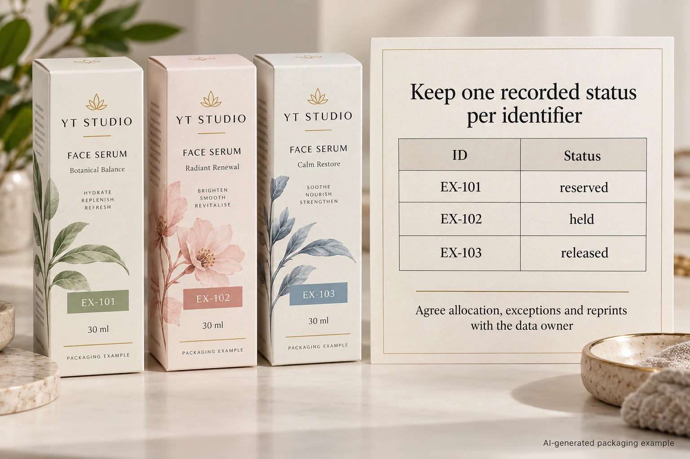

A serum project asks for a different serial on every carton. The first proof looks right. Then a small rejected portion needs reprinting, and the production team asks which numbers to use. Without a controlled answer, a tidy printed number can become a duplicate identity.
Approve a serial allocation and reconciliation process before releasing serialized cosmetic labels. The template, the list of allowed identifiers and the final disposition of printed output need separate records. A successful data merge does not prove that one identifier reaches only one released item.
Decide whether item-level identity is actually needed
A variant name identifies a design. A batch number identifies a production grouping under the owner's system. An item-level serial distinguishes a particular instance. These tasks should not be exchanged just because the artwork has space for changing text.
GS1 explains item-level serial identification, including the combination of a GTIN and serial number for a trade-item instance. That does not make a decorative number a valid GS1 identifier, an authentication system or a requirement for every cosmetic product.
Ask the brand's data or receiving-system owner what the identifier must mean and which format governs it. If the requirement is only two fixed artwork variants, ordinary controlled files may be simpler. Do not introduce serial allocation work without a defined user and result.
Put one owner in charge of the namespace
Record who generates the identifiers and who can reserve or change them. The namespace is the context in which uniqueness is checked: for example, the product identifier together with its serial, rather than the visible serial string alone. Have the system owner define the key.
Identify the approved source file, revision, record count and permitted values. Treat identifiers as text when leading zeros or letters matter. Do not let an ordinary spreadsheet conversion silently alter the source. Have the data owner confirm the actual exported values, not only the column's visual formatting.
The printer should acknowledge which controlled data it has received. Where several converters or locations are involved, define nonconflicting allocations under one authority. Sending the same list to two suppliers without instructions leaves a duplication risk that no attractive proof can resolve.
Use mutually exclusive states rather than a reassuring total
| Record | What to capture | Release question |
|---|---|---|
| Reserved | Approved unique key, job, allocation file and owner | Is another job already using this key? |
| Printed and held | Output reference and inspection disposition | Has it been accepted for the intended item? |
| Rejected or cancelled | Reason, physical control and authorized next action | Could another physical label with this identity still be used? |
| Released | Accepted output and handoff reference | Does the released record match the physical supply? |
| Reprint exception | Original identity, authority, replacement decision and reconciliation | What prevents two active copies reaching product? |
The rows describe records, not a required software product. Define the permitted transitions so that the same physical output is not counted in two final states. Reconcile the approved allocation with the accepted, held and rejected output using the actual process. An unexplained count difference remains an exception.
Check duplicates using the defined unique key, not a convenient substring. Check missing and unexpected records against the approved source. Then compare the human-readable text and encoded data where both are required. A scan returning something is not enough if it returns the wrong identity.

Agree the reprint rule before there is a rejection
There are at least two possible arrangements: issue a newly authorized identity, or reproduce an existing identity under a process that controls the original output and the system record. The brand's identification system and relevant partners must decide which is permitted. This guide does not prescribe one universal rule.
For an existing identity, determine what happens to the original label or item, who can authorize the replacement and how the record shows that transition. For a new identity, determine how the old one is closed and the replacement is linked where the system needs that relationship. Do not infer permission from the fact that a reprint file can be generated.
Stop release if the team cannot account for rejected output, the same allocation was issued twice, or the accepted list cannot be tied to the supplied labels. The useful next step is an exception review with the data owner and production party, not a manual edit to make the totals agree.
Keep layout, identity and security claims separate
Our variable-data approval guide addresses source fields and rendered layouts. The finished-pack barcode checklist addresses code mapping and print assessment. Serial uniqueness adds a different control: managing which identities exist on released physical output.
A hypothetical brand using simple internal tracking may need a modest controlled ledger and an acknowledged production process. A retailer-connected serialized workflow can require specialist integration and partner acceptance. Neither arrangement should be described as anti-counterfeit protection solely because the serials differ.
For a cosmetic label project, provide dimensions, quantity, construction, changing-field requirements and representative non-sensitive sample data. Identify the owner of the allocation and the intended receiving system. Ask which parts of the proposed workflow are available and which need a specialist.
Prepare the request with the inquiry form, then send approved files through email or WhatsApp. The form creates a message draft and does not upload attachments. Obtain agreement on the reprint exception before approving the main production release.